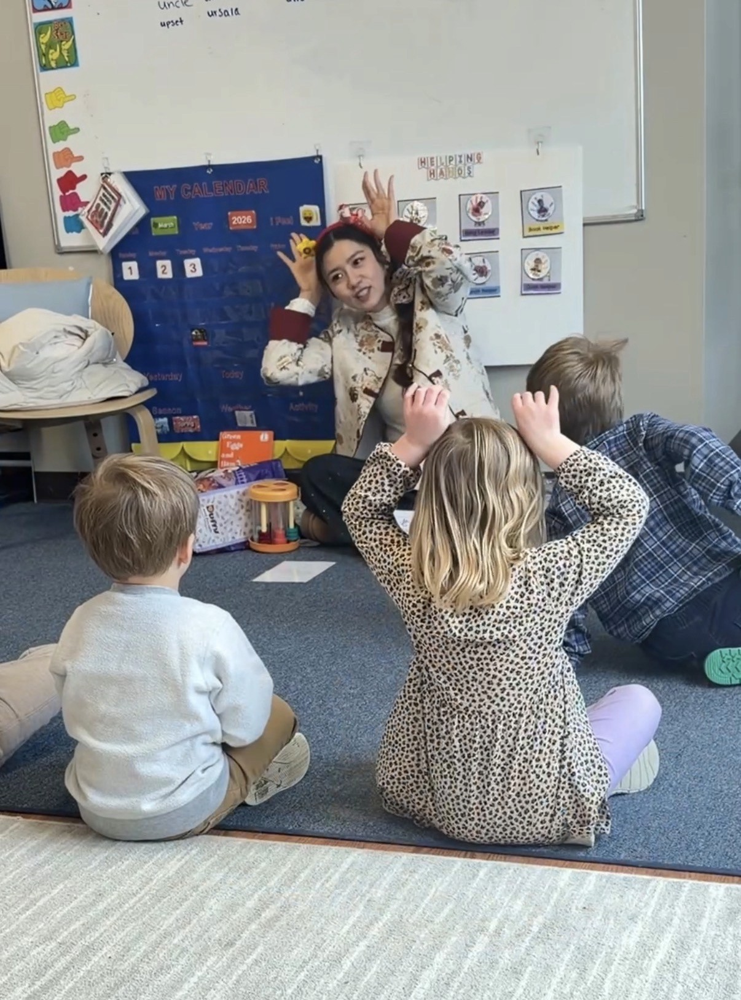

Sing & move
Catchy songs, little dances, and new words that come to life through movement.
A little language. A world of possibilities.
A happy place to learn Mandarin. Songs, stories, and playful little adventures that help your child’s curiosity bloom.
Ages 2–6 · Small groups · Big smiles

ROOTED IN PLAY
Children learn best when they’re curious, comfortable, and having fun. Every class brings Mandarin to life in ways little learners love.
Catchy songs, little dances, and new words that come to life through movement.
Wonderful characters and simple stories open a whole new world of words.
Hands-on crafts and everyday games make new language feel familiar.
Festivals, traditions, and small discoveries connect language with a wider world.
A LITTLE LOOK INSIDE
A warm, interactive space to try new words, find a little confidence, and grow a love of Mandarin.
Let’s find the right fitCuriosity is a wonderful place to start.
A WARM HELLO
I’m an experienced Mandarin teacher who loves working with young children. I bring language to life through songs, stories, games, movement, and hands-on activities.
At Mandarin Sprouts, I want every child to feel welcome, feel confident trying, and discover the joy of Chinese language and culture—one happy little moment at a time.
Say hello to Ms. DidoHAPPY LITTLE LEARNERS, HAPPY GROWN-UPS
My child loves Chinese class and has learned so many songs and words from the teacher. I am really impressed!
You provide engaging, joyful lessons for the children, and we consistently hear positive feedback from families.
The children love Mandarin and they love you!
LITTLE QUESTIONS, HELPFUL ANSWERS
Wondering whether it’s a good fit? I’m always happy to chat.
Mandarin Sprouts is designed for children ages 2–6. Classes use songs, movement, stories, and creative activities suited to little learners.
Yes. Classes are primarily in Mandarin, with English support to help children follow along and feel comfortable. Tell me a little about your child’s language experience, and we can talk about the right fit.
Please contact Ms. Dido for current class locations, schedules, and availability. Email me ↗
Use the free trial form to share your interest and ask about joining a class. Open the trial form ↗
LET’S GROW SOMETHING WONDERFUL
Come meet Ms. Dido and discover how Mandarin can feel like play.
Book a free trial